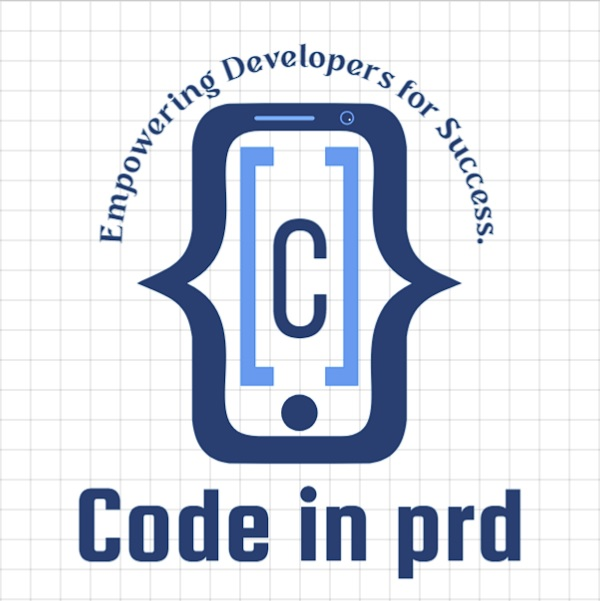

Code In Prd
Python
Course Structure
1.
Introduction to Python
1.1
Overview of Python
1.2
Installing Python
1.3
Creating and Executing a Python Script
1.4
Running Python Code Interactively
1.5
IDLE: Python's built-in IDE
1.6
Getting Help in Python
2.
Getting Started with Python
2.1
Keywords and Identifiers
2.2
Python Data Types
2.3
Variables
2.4
Operators
2.5
Expressions
2.6
Statements
2.7
Input/output and Comments
2.8
Introduction to Python Data Structures
3.
Strings
3.1
Introduction to Strings
3.2
String Slicing
3.3
Combining and Repeating Strings
3.4
String Methods
3.5
Escape Sequences and Raw Strings
3.6
String Formatting
4.
Lists and Tuples
4.1
Introduction to Lists
4.2
Indexing and Slicing
4.3
Adding and Removing Elements
4.4
Sorting and Reversing a List
4.5
Concatenation and Repetition
4.6
Nested Lists
4.7
Copying a List
4.8
Shallow Copy and Deep Copy
4.9
Introduction to Tuples
4.10
Tuple Packing and Unpacking
5.
Dictionaries and Sets
5.1
Introduction to Dictionaries
5.2
Dictionary Methods
5.3
Creating Dictionaries
5.4
Accessing and Modifying Elements
5.5
Dictionary Iteration
5.6
Introduction to Sets
5.7
Set Methods
5.8
Set Operations
6.
Conditional Execution
6.1
Introduction to Control Structures
6.2
Conditional Processing using the if statement
6.3
else Clause
6.4
elif Clause
6.5
Truthiness
6.6
Revisiting 'or' and 'and' Operators
6.7
if-else Operator
7.
Loops
7.1
while Loop
7.2
while Loop Examples
7.3
for Loop
7.4
Unpacking in for Loop Header
7.5
Iterating over Dictionaries and Sets
7.6
Counter Loops using range()
7.7
Nested Loops
7.8
break Statement
7.9
More on break Statement
7.10
continue Statement
7.11
else Block in Loops
7.12
pass Statement
8.
Looping Techniques
8.1
Introduction
8.2
Using sorted(), reversed(), and set() in for Loop
8.3
Index-based for Loops
8.4
Generating both Index and Item using enumerate()
8.5
Parallel Traversals using zip() in Python
8.6
Modifying a List while Iterating
9.
Comprehensions in Python
9.1
List Comprehensions in Python
9.2
Avoiding Aliasing using List Comprehensions
9.3
If Clause
9.4
Multiple for Clauses and Nested List Comprehension
9.5
Dictionary Comprehensions in Python
9.6
Set Comprehensions in Python
10.
Functions
11.
Modules
11.1
Introduction to Modules
11.2
from Statement
11.3
Structure of a Multifile Python Program
11.4
if __name__ == '__main__'
12.
Scopes and Namespaces
12.1
Namespaces
12.2
Scopes
12.3
Name Resolution
12.4
global Statement
12.5
nonlocal Statement
13.
Files
13.1
Introduction
13.2
Opening a File
13.3
Text and Binary Files
13.4
Closing a File
13.5
with Statement
13.6
Random Access
13.7
Reading a File
13.8
Writing to a File
13.9
Some File-Related Programs
13.10
Command Line Arguments
13.11
Pickling
14.
OOPS
14.1
Introduction to Python Object-Oriented Programming (OOP)
14.2
Classes and Objects
14.3
Initializer Method
14.4
Data Hiding
14.5
Property
14.6
Class Variables
14.7
Class Methods
14.8
Static Methods
14.9
Magic Methods
14.10
Inheritance in Python
14.11
Multiple Inheritance
14.12
MRO and super()
14.13
Polymorphism in Python
15.
Iterator and Generators
15.1
Iterables and Iterators
15.2
How for Loop and Other Iteration Tools Work
15.3
Supporting Single Iteration or Multiple Iteration
15.4
Creating Your Own Iterators
15.5
Making Your Own Class Iterable
15.6
Some More Iterators
15.7
Lazy Evaluation
15.8
Itertools Module
15.9
Generators in Python
15.10
Yield Statement
15.11
Generator Expressions
16.
Decorators
16.1
Prerequisite Review
16.2
Introduction to Decorators
16.3
Decorator Examples and Applications
16.4
Decorating Functions with Parameters in Python
16.5
Applying Multiple Decorators
16.6
Using wraps Decorator from functools Module
16.7
Decorators with Parameters
16.8
Decorating Classes
16.9
Class Decorators in Python
16.10
Class Decorators with Arguments
17.
Coding standard and best practices